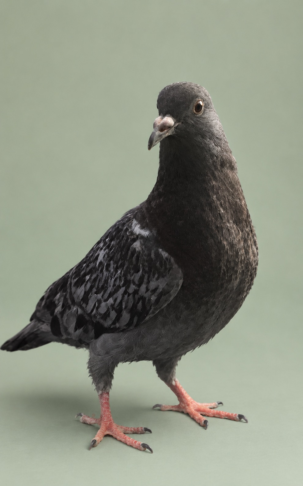

AVAILABLE
Meet this adorable, sweet baby, Ranch! He was rescued by a member of the public and given to use soon after, and raised here at SCPR with the help of a foster pair! He's assumed to be born around the first week of August based on his development at the time.
Since then, Ranch has been raised as an indoor bird and is ready to find his forever home! He's weaned completely from crop milk and eats mostly Mazuri Checkers Pelleted at the moment, though he can easily be switched onto an all-seed diet.
